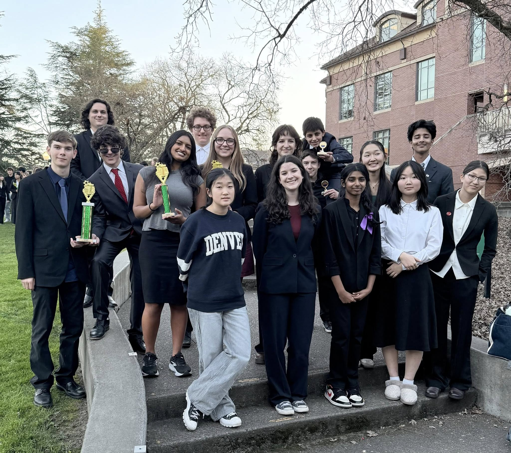
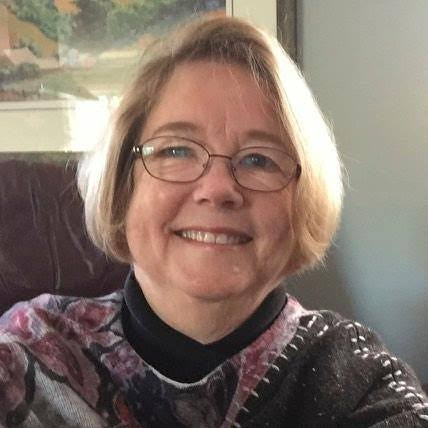

Nearly twenty years of competing and building a program, from Novato to the State tournament.
San Marin Speech and Debate has been around since 2007, started by a handful of students who wanted a space to actually argue about things that matter. There is no class period and no paid coaching staff. The whole thing runs on students who show up because they want to, and a volunteer coach who has been doing this longer than most of us have been alive.
Most of us came in not knowing what parliamentary debate even was. That tends to change pretty fast.

Built on Three Principles
Everything we do in a round, and outside of it, comes back to these.
Parliamentary debate gives you twenty minutes to build a case on something you have never seen before.
We don't memorize positions. We learn to think, and to think fast. Every round is a new problem, and every problem makes you sharper.
This team has always been student-led. The seniors teach the juniors, the juniors teach the sophomores, and everyone figures it out together.
That is why the people who stick around actually get good.
San Marin is one of only two competitive debate programs in all of Marin County, and the only one in Novato. We have also been at it the longest, since 2007.
We say it because it reminds us why we show up. If we don't run this, nobody in Novato gets to.
From a Classroom to the State Tournament
Key milestones from the founding of the club to where the team stands today.
A handful of students at San Marin High School started the club in the spring of 2007. There was no paid coach, no dedicated classroom, and no budget. They met in Adam Williams' room and spent that first stretch going to tournaments just to watch. Ms. Kenyon came on to volunteer and served as both coach and advisor.
The team started competing for real, and it picked Parliamentary debate. That turned out to be a steep climb for everyone. Parli didn't exist the last time Ms. Kenyon coached high school debate, so the coach and the students learned it from the ground up together. About ten students were involved by the end of that first season.
Around this point Mr. Moore, a French teacher, became the club's faculty advisor and meetings moved into his room. The team also started making the trip to invitationals at Stanford, Santa Clara, and the University of the Pacific. Bigger fields, longer days, and the first real sense of what the program was up against.
The Varsity team of James Gunn and Bill Cao became the first San Marin pair to reach elimination rounds at the GGSA State Qualifying tournament. They made it to the final round and lost on a split decision. It was the farthest any San Marin team had gone.
There had always been Novice debaters, but the program got genuinely structured around now, and it leaned on its own students to do much of the coaching of the younger ones. That culture of students teaching students still defines the team today. Ms. Warren became faculty advisor about this point, and Dan Leahy joined the staff as an assistant coach.
Ms. Kenyon retired, and Ms. Warren took over as both advisor and coach with Dan Leahy assisting. The team kept growing. There were over 35 students involved by the time Ms. Kenyon left. San Marin was fielding teams at all three levels and bringing home trophies from almost every tournament.
Ms. Warren left around this point, and the students ran the program themselves. They recruited new members, ran the meetings, coached the younger debaters, and competed on top of all that. And they were very successful doing it.
Online competition became the norm. In the middle of that, Trevor Fox and Pranav Pannala became the first San Marin team to qualify for the California State tournament, during the 2020-21 virtual season. California held that championship online, the first of its kind.
As competition returned to in-person meets around the Bay Area, San Marin got the news that Dan Leahy, their assistant coach, had died of a heart attack. The team also learned it would now need a coach at every tournament plus a faculty advisor. The students secured Ms. Havel as advisor, then made a heartfelt plea to Ms. Kenyon and convinced her to come out of retirement. She was amazed at how well the older students had trained the younger ones, and how competitive the team still was.
Mr. Alexander became the club's faculty advisor. At that point San Marin was the only competitive debate program left in Marin County. Other programs had come and gone over the years, and this one kept going. Being the last one made the work feel like a responsibility.
Six teams posted records strong enough to be eligible for the GGSA State Qualifying tournament, and one of them finished in the top 8 there, though no San Marin team advanced to State that year. The season's headline belonged to co-President Noela De Frenza. She was named one of the top five finalists in California for the California High School Speech Association's Student of the Year, an award judged on performance and service, and was presented with it at the State tournament.
In the spring, the Varsity team of Domi Janot and Disha Divakar qualified first at the GGSA state qualifying tournament and headed to the State Tournament in Los Angeles. On the strength of that record they were also invited to the NPDL Tournament of Champions at UC Berkeley, a first for the program. That fall, Ms. Laabs became faculty advisor.
The team grew bigger again, and in January one of its teams won a Top Finisher trophy at the Martin Luther King tournament. The Varsity teams came home with trophies from every tournament that season. The Novices did well too. Every new team put up a winning record and moved up into the next division.
The year is starting off with the news that Carina Masters, one of our own debate alums, is coming back to assist. She debated in college and spent two years as the Assistant Coach at Humboldt State. The club is now old enough that the students it trained are coming back to coach. What happens next is up to whoever shows up.
Note: This history reflects the recollections of longtime coach Karen Kenyon, who founded the program in 2007. Some advisor and coaching dates are approximate.

Karen Kenyon came to San Marin with a strong foundation in communications and a record of building programs that last. Having competed herself through high school and college, she understands firsthand what our students are walking into.
She stepped away from coaching to focus on her family, then returned to the activity at Sinaloa Middle School. Our founding students sought her out specifically because of her reputation, and she has stayed with the program ever since, entirely as a volunteer.
She coaches to turn out independent thinkers who can hold their own in a room. Most of what follows on this page happened under her.
Accolades
Every result on this page was earned in competition. Click any award to read more.
Every award on this page was earned by a student who showed up to practice. No experience needed to start.